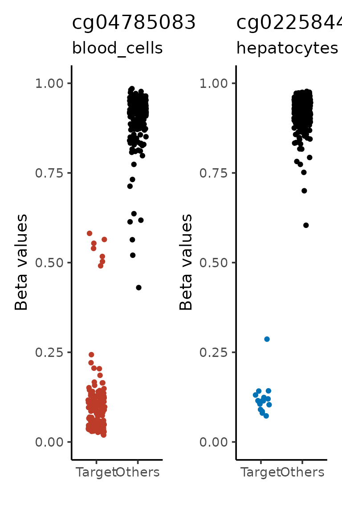

Generate signatures
Tiago Maié
2025-12-05
Source:vignettes/generate-signatures.Rmd
generate-signatures.RmdCimpleG (Simple CpG signatures)
- CimpleG tries to find the CpGs that best classify a cell-type given a train dataset
- It also enables you to perform cell-type deconvolution in a couple of easy steps
- It can use beta or M values
- Here we show how easy it is to generate a signatures
Installation
If you haven’t installed CimpleG, you can find the instructions to do so here. However it should be as simple as:
if (!require("CimpleG")) devtools::install_github("costalab/CimpleG")Loading data
In this tutorial, we will use a small dataset with just 409 samples and 1000 CpGs. We will also use a table with metadata regarding these samples. This dataset comes included with CimpleG. You can read more about it here:  .
.
Running CimpleG
Running CimpleG can be quite simple. You just need to run the CimpleG function with a few parameters.
# run CimpleG
cimpleg_result <- CimpleG(
train_data,
train_targets,
target_columns = c("blood_cells", "hepatocytes"),
train_only = TRUE
)
#> Training for target 'blood_cells' with 'CimpleG' has finished.: 1.545 sec elapsed
#> Training for target 'hepatocytes' with 'CimpleG' has finished.: 0.541 sec elapsedHere we are generating signatures to find leukocytes and hepatocytes.
Plotting CimpleG CpG signature
We can quickly visualize how our signature is able to separate the data.
sig_plt <-
signature_plot(
cimpleg_result,
train_data,
train_targets,
sample_id_column = "gsm",
true_label_column = "cell_type"
)
sig_plt$plot